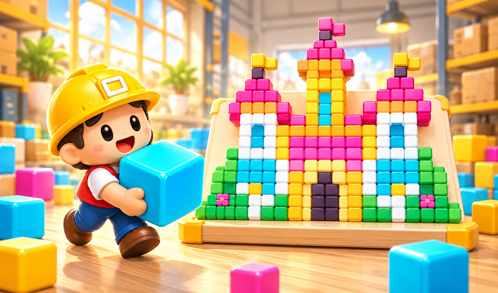

Cube Crates
Выбирайте цветные ящики, собирайте кубики и освобождайте проходы.

Об игре
Cube Crates — головоломка с цветными кубиками и очередью ящиков. Нажмите на доступный ящик, чтобы занять свободное рабочее место. Работники автоматически отправятся за кубиками такого же цвета, если к ним открыт путь. Вместимость ящика определяет, сколько кубиков он может принять; после выполнения задания место освобождается.
Ваша цель — очистить всё поле. Удаление кубиков открывает проходы и делает доступными новые участки, поэтому порядок выбора ящиков влияет на дальнейшие ходы. Смотрите на цвета у открытых краёв и на оставшееся место для работы. Если занять места ящиками, которые не могут добраться до нужных кубиков, продвижение остановится. Продумывайте очередь и постепенно разбирайте поле.
Как играть
- 1.
- Нажмите на доступный цветной ящик в очереди при наличии свободного рабочего места.
- 2.
- Работники сами соберут достижимые кубики соответствующего цвета.
- 3.
- После заполнения ящика используйте освободившееся место для следующего задания.
- 4.
- Выбирайте порядок так, чтобы открывать проходы и убрать все кубики.